Piece list
All of the pieces currently in the game. This file is automatically generated from Valheim 0.218.15 using the JotunnDoc mod found on our GitHub.
_CultivatorPieceTable
| Piece | AssetID | Token | English Name | Description | Resources required |
|---|---|---|---|---|---|
| cultivate_v2 | 2cd125dc88fa8eb5bb0cf208899c310c | $piece_cultivate | Cultivate | NULL | |
| replant_v2 | a722f37b1a9f61732952383305b4b69d | $piece_replant | Grass | NULL | |
| sapling_turnip |
83d79f1ed37184be9a9a00878641014f | $piece_sapling_turnip | Turnip | NULL |
|
| sapling_seedturnip |
fd11bfbf45f254e8bb234d2b484998cc | $piece_sapling_seedturnip | Seed-turnip | Plant a turnip to get more seeds |
|
| sapling_onion |
7fde104cefec734829b4c8aa0971a63a | $piece_sapling_onion | Onion | NULL |
|
| sapling_seedonion 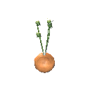 |
00f18bc5bef95ddc3857268f20a8bc93 | $piece_sapling_seedonion | Seed-onion | Plant onion seeds to get even more seeds. |
|
| sapling_carrot |
a781bbc5b2e5e4d37a79dacf16d763fc | $piece_sapling_carrot | Carrot | Plant carrot seeds to grow carrots |
|
| sapling_seedcarrot |
c3836b743789e4c1dbf141bf6ab996d4 | $piece_sapling_seedcarrot | Seed-carrot | Plant a carrot to get more seeds |
|
| sapling_barley |
868c2f708a5ac4bc592909310dd7a7d5 | $piece_sapling_barley | Barley | NULL |
|
| sapling_flax |
d3d7be74637fb40a78780d84290739b7 | $piece_sapling_flax | Flax | NULL |
|
| sapling_jotunpuffs |
9c713691764e00f4fa2e108e3813e31a | $item_jotunpuffs | Jotun Puffs | NULL |
|
| sapling_magecap |
f836746312b02cc48b46b3f818b113dd | $item_magecap | Magecap | NULL |
|
| FirTree_Sapling |
5d109cd6286a94b1991e3374d01cd193 | $prop_fir_sapling | Fir Sapling | NULL |
|
| PineTree_Sapling |
3ba216d94f6bd4d3b873bc5e1daf90c0 | $prop_pine_sapling | Pine Sapling | NULL |
|
| Beech_Sapling |
14082565f610e491f8a2625c39ec6cdb | $prop_beech_sapling | Beech sapling | NULL |
|
| Birch_Sapling |
9e07abb0f49c52d49a1e1f626d72e216 | $prop_birch_sapling | Birch Sapling | NULL |
|
| Oak_Sapling |
86286b75c8c8dc3428b95e8f35a7054a | $prop_oak_sapling | Oak Sapling | NULL |
|
| VineAsh_sapling |
372f1592d262b80488d6d3a48035e1ea | $piece_sapling_vineash | Ashvine | Needs something to cling to. |
|
_HammerPieceTable
| Piece | AssetID | Token | English Name | Description | Resources required |
|---|---|---|---|---|---|
| piece_repair | 06ed17b6ce7cb42f49a55dab65785dbf | $piece_repair | Repair | NULL | |
| fire_pit 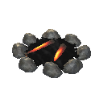 |
70ba4400e704e49b2a422575fb3ab661 | $piece_firepit | Campfire | NULL |
|
| fire_pit_iron 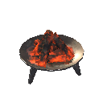 |
ba64841fbb6c42f19ab51d0c862a1afa | $piece_firepit_iron | Iron Fire Pit | NULL |
|
| bonfire |
49687903c03a347e7ba3ad2a84cc268f | $piece_bonfire | Bonfire | NULL |
|
| hearth |
eb03631e573f54af483eecb02ddf1bb2 | $piece_hearth | Hearth | NULL |
|
| wood_stack |
2cc4b9c6e6f654e44b70824accb1bac4 | $piece_woodstack | Wood Stack | NULL |
|
| wood_fine_stack 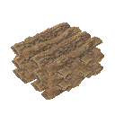 |
19d7799370f19924e85773651ea54778 | $piece_woodfinestack | Finewood Stack | NULL |
|
| wood_core_stack |
6ff27bd580da57a40a2f05d44e7955a6 | $piece_woodcorestack | Corewood Stack | NULL |
|
| wood_yggdrasil_stack |
97ca0fd8b81888557abf6eeb2ede448e | $piece_yggdrasilstack | Yggdrasil Wood Stack | NULL |
|
| blackwood_stack |
404242e06d4e356628efc367513e4840 | $piece_blackwoodstack | Ashwood Stack | NULL |
|
| stone_pile 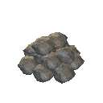 |
4c81ace38f76f4327be4f49c946dbf3b | $piece_stonepile | Stone Pile | NULL |
|
| coal_pile 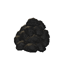 |
e74c2a06eb4567f43815c60f0a216ec4 | $piece_coalpile | Coal Pile | NULL |
|
| blackmarble_pile 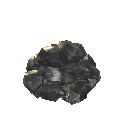 |
568a3bd9e41ae7a119aa5813ef236624 | $piece_marblepile | Black Marble Pile | NULL |
|
| grausten_pile |
bcdaf0b1b31a77939ac5559226e35137 | $piece_graustenpile | Grausten Pile | NULL |
|
| skull_pile |
30d2dc4d547bc8e5dbb47c8da6cf15b1 | $piece_skullpile | Pile of Skulls | NULL |
|
| bone_stack |
bbd62f65ebcfc3d829ae80c61c8eddc4 | $piece_bonestack | Bone Stack | NULL |
|
| piece_cookingstation 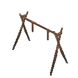 |
a87cc4aca130d4d36a820342aaf7e360 | $piece_cookingstation | Cooking Station | NULL |
|
| piece_cookingstation_iron |
59f1065c85e319a45b152f023548e884 | $piece_cookingstation_iron | Iron Cooking Station | NULL |
|
| piece_cauldron 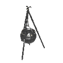 |
f1bf7d6010e98462893b8543ae46856a | $piece_cauldron | Cauldron | Crafting station |
|
| cauldron_ext1_spice |
5675ba4a776791741a471972985f1288 | $piece_cauldron_ext1_spice | Spice Rack | Cauldron improvement |
|
| cauldron_ext3_butchertable 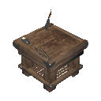 |
d68c8ee93dde6e343b453c986af053c2 | $piece_cauldron_ext3_butchertable | Butcher's Table | Cauldron improvement |
|
| cauldron_ext4_pots |
995e1b9da1747d4449234e721df10e89 | $piece_cauldron_ext4_pans | Pots and Pans | Cauldron improvement |
|
| cauldron_ext5_mortarandpestle 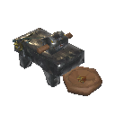 |
bba2754101cfb9d42b00faa8891567c7 | $piece_cauldron_ext5_mortarandpestle | Mortar and Pestle | Cauldron improvement |
|
| cauldron_ext6_rollingpins |
3187f883c29dad54e888529748ce70a9 | $piece_cauldron_ext6_rollingpins | Rolling Pins and Cutting Boards | Cauldron improvement |
|
| piece_oven 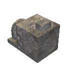 |
5cad8f7ab5567ec498f63dd0ef28a1e5 | $piece_oven | Stone Oven | NULL |
|
| piece_workbench 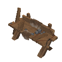 |
8aa8f18747bb24033bac6d43da077cc7 | $piece_workbench | Workbench | Crafting station |
|
| piece_workbench_ext1 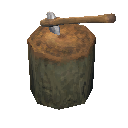 |
fb92736c0d7d644ce90ce2ab4ac2614a | $piece_workbench_ext1 | Chopping Block | Workbench improvement |
|
| piece_workbench_ext2 |
e5a43250f224f4b208e3eca9965560a1 | $piece_workbench_ext2 | Tanning Rack | Workbench improvement |
|
| piece_workbench_ext3 |
4483597b84fa6824f9992d5af665d428 | $piece_workbench_ext3 | Adze | Workbench improvement |
|
| piece_workbench_ext4 |
2ec412a0b7b11a158b3ed1185865fb39 | $piece_workbench_ext4 | Tool Shelf | Workbench improvement |
|
| piece_stonecutter |
b369b2d8a9e494d27b82902267829904 | $piece_stonecutter | Stonecutter | Crafting station |
|
| piece_artisanstation 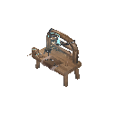 |
47739655182154664b1927ba002afa11 | $piece_artisanstation | Artisan Table | Crafting station |
|
artisan_ext1 |
2ce632ba53495e740a4314bc0765f6e1 | $piece_artisan_ext1 | Artisan Press | Artisan Table improvement |
|
| forge 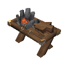 |
5983ba8568237480f9c931dac464dc0e | $piece_forge | Forge | Crafting station |
|
| forge_ext1 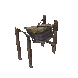 |
35648e76441d44d9fa3219d1783cdc27 | $piece_forge_ext1 | Forge Bellows | Forge improvement |
|
| forge_ext2 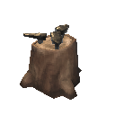 |
3a599566e5b9b4a529c5afddbdaac6db | $piece_forge_ext2 | Anvils | Forge improvement |
|
forge_ext3 |
9aeb8a925b5644b3292e362f73eab508 | $piece_forge_ext3 | Grinding Wheel | Forge improvement |
|
| forge_ext4 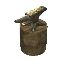 |
9b504c4f3e5b54e70ab355fe864ef492 | $piece_forge_ext4 | Smith's Anvil | Forge improvement |
|
| forge_ext5 |
0d6f7df90e3df481abea89f337113de9 | $piece_forge_ext5 | Forge Cooler | Forge improvement |
|
| forge_ext6 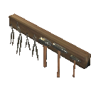 |
dc7235b5d46ac40bb8230472b6257e2e | $piece_forge_ext6 | Forge Tool Rack | Forge improvement |
|
| smelter |
c04e7a906bef34e519e7c880b1dc54e4 | $piece_smelter | Smelter | NULL |
|
| blastfurnace 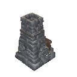 |
b9078e4a0160627e0a689bff9c20fc9b | $piece_blastfurnace | Blast Furnace | NULL |
|
| eitrrefinery |
9633271e2f86cfc14b8b28fe21c2cb27 | $piece_eitrrefinery | Eitr Refinery | NULL |
|
| blackforge 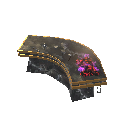 |
b54ead43818db1b4ba019f9ad1211e90 | $piece_blackforge | Black Forge | Crafting station |
|
| blackforge_ext1 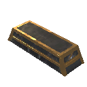 |
e23070000978e9d418f45e1e9e4bd144 | $piece_blackforge_ext1 | Black Forge Cooler | Black Forge improvement |
|
| blackforge_ext2_vise 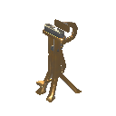 |
e65a593a872c31743bc4213c75ba5793 | $piece_blackforge_ext2 | Vice | Black Forge improvement |
|
| blackforge_ext3_metalcutter 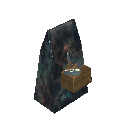 |
a39f5bb6d05c0144481ae65c14f9268f | $piece_blackforge_ext3 | Metal Cutter | Black Forge improvement |
|
| blackforge_ext4_gemcutter |
34e35d0424826f54fbbeb831ce363aa3 | $piece_blackforge_ext4 | Gem Cutter | Black Forge improvement |
|
| charcoal_kiln 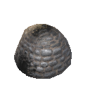 |
12d273dd5f199490b969fd0a713675b2 | $piece_charcoalkiln | Charcoal Kiln | NULL |
|
| windmill |
d20c541789946426f9483ca1df70bd4e | $piece_windmill | Windmill | NULL |
|
| piece_spinningwheel |
3ea2415d1aade44ac8e7cc0009e2e18e | $piece_spinningwheel | Spinning Wheel | NULL |
|
| wood_floor_1x1 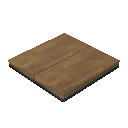 |
159d6bdea9615485a8aa90f125502f21 | $piece_woodfloor1x1 | Wood Floor 1x1 | NULL |
|
| wood_floor 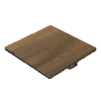 |
a1d4de6f8ce364ab4a6085a2225b4669 | $piece_woodfloor2x2 | Wood Floor 2x2 | NULL |
|
| wood_stair 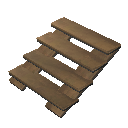 |
60a7c9362d3ee4b679430603641263ec | $piece_woodstair | Wood Stairs | NULL |
|
| wood_stepladder 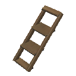 |
6291e84c015974d43a8100c315701f4e | $piece_woodstepladder | Wood Ladder | NULL |
|
| wood_wall_quarter |
0f9a144fd75eb3642978a731be001868 | $piece_woodwallquarter | Wood Wall 1x1 | NULL |
|
| wood_wall_half 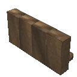 |
4315c89c7b4bf47c4b68a632376e18d7 | $piece_woodwallhalf | Wood Wall Half | NULL |
|
| woodwall 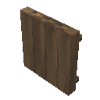 |
db8c0a09c92ce4027960ab22eaea05bb | $piece_woodwall | Wood Wall | NULL |
|
| wood_wall_roof 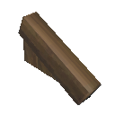 |
dc609c1ae07bd40439d5105e5b8d33c1 | $piece_woodwallroof | Wood Wall 26 | NULL |
|
| wood_wall_roof_upsidedown |
773edddbef9c1744991cc679f437047c | $piece_woodwallroof_upsidedown | Wood Wall 26 (Inverted) | NULL |
|
wood_wall_roof_top |
252678d24e3ac47c6b6098797b90b538 | $piece_woodwallrooftop | Wood Roof Cross 26 | NULL |
|
| wood_wall_roof_45 |
122b2b185bc524a818a4d9571d0ffea7 | $piece_woodwallroof45 | Wood Wall 45 | NULL |
|
| wood_wall_roof_45_upsidedown 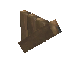 |
90a879cf05bf2bb44952f3932778a421 | $piece_woodwallroof45_upsidedown | Wood Wall 45 (Inverted) | NULL |
|
| wood_wall_roof_top_45 |
cb607c70601f9472e8b7fd56552cdd6b | $piece_woodwallrooftop45 | Wood Roof Cross 45 | NULL |
|
| wood_roof 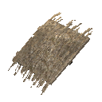 |
43698603b9a234f5987f762e1d1039b1 | $piece_woodroof26 | Thatch Roof 26 | NULL |
|
| wood_roof_top |
78f639c5704e94d598947881e1248499 | $piece_woodrooftop | Thatch Roof Ridge 26 | NULL |
|
| wood_roof_ocorner 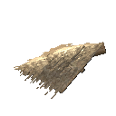 |
70b2b63e85ead4928b8078f6ea188615 | $piece_woodroofocorner | Thatch Roof Outer Corner 26 | NULL |
|
| wood_roof_icorner |
f146b5c99f9cd4c0e8fcad5fd0fa4920 | $piece_woodrooficorner | Thatch Roof Inner Corner 26 | NULL |
|
| wood_roof_45 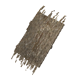 |
6ddadab83fdf743749a21df88fabed77 | $piece_woodroof45 | Thatch Roof 45 | NULL |
|
| wood_roof_top_45 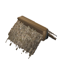 |
2267254e06be44e9eba2b2e540301384 | $piece_woodrooftop45 | Thatch Roof Ridge 45 | NULL |
|
| wood_roof_ocorner_45 |
390a7480088494446a1718424dc3230e | $piece_woodroofocorner45 | Thatch Roof Outer Corner 45 | NULL |
|
| wood_roof_icorner_45 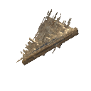 |
2a8e2516ff4b84194a117a9594dd31dc | $piece_woodrooficorner45 | Thatch Roof Inner Corner 45 | NULL |
|
| wood_pole |
7637dd4b012264b1bb317770a07f8692 | $piece_woodpole | Wood Pole 1 m | NULL |
|
wood_pole2 |
a9411625f489846e7b9c7091ecbf9784 | $piece_woodpole2 | Wood Pole 2 m | NULL |
|
| wood_beam_1 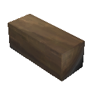 |
9741cd341b01d4e41b4bc1410e2b9b43 | $piece_woodbeam1 | Wood Beam 1 m | NULL |
|
| wood_beam 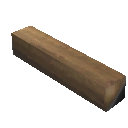 |
4943f2b1c9c484f03ab1cc8e294e4f92 | $piece_woodbeam2 | Wood Beam 2 m | NULL |
|
wood_beam_26 |
b0a95388438d84e56b54d6e4e3761e60 | $piece_woodbeam26 | Wood Beam 26 | NULL |
|
wood_beam_45 |
aa897656e8ed44ccb8ed1198ec9b321b | $piece_woodbeam45 | Wood Beam 45 | NULL |
|
| wood_dragon1 |
87ed7bcd5c25a4ac8a6ab667957e0514 | $piece_wooddragon | Wood Dragon Adornment | NULL |
|
| wood_door |
96a888350ec664e9da492f97b4388aec | $piece_wooddoor | Wood Door | NULL |
|
| wood_gate 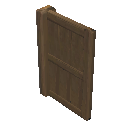 |
ce871db3a2b404c9a8d78c9c2e6e8210 | $piece_woodgate | Wood Gate | NULL |
|
| darkwood_gate |
511312a0462cbf7f99500ffb7b13cb3d | $piece_darkwoodgate | Darkwood Gate | NULL |
|
piece_hexagonal_door |
bc917192f0cb37fa99fc53157d80f720 | $piece_hexagonalgate | Hexagonal Gate | NULL |
|
| wood_window 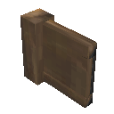 |
2344d23683154f647b065287b2c9b6d6 | $piece_woodwindowshutter | Wood Shutter | NULL |
|
| wood_pole_log |
1d803e46e94c7024aac699f98294b653 | $piece_logpole2 | Log Pole 2 m | NULL |
|
| wood_pole_log_4 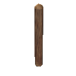 |
c4c24451e194e4834b7a2604b52704da | $piece_logpole4 | Log Pole 4 m | NULL |
|
| wood_wall_log 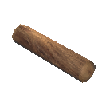 |
4ff55ea4a6ecf4093bcc6e2335195aa2 | $piece_logbeam2 | Log Beam 2 m | NULL |
|
| wood_wall_log_4x0.5 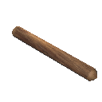 |
4c71c657a53829448aac09db53da3b50 | $piece_logbeam4 | Log Beam 4 m | NULL |
|
| wood_log_26 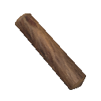 |
c78458c4f684f4b448fa4f4bd65190f8 | $piece_woodlog26 | Log Beam 26 | NULL |
|
wood_log_45 |
89012f90c5d4c904795ebe367defa894 | $piece_woodlog45 | Log Beam 45 | NULL |
|
| darkwood_roof 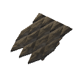 |
4444eb7410b01d7459f5a979773b698e | $piece_darkwoodroof26 | Shingle Roof 26 | NULL |
|
darkwood_roof_top |
9c8f8b60ccee02f44a0d22e72aed84cf | $piece_darkwoodrooftop | Shingle Roof Ridge 26 | NULL |
|
| darkwood_roof_ocorner |
37c849834db8abe48a81a0679636940e | $piece_darkwoodroofocorner | Shingle Roof Outer Corner 26 | NULL |
|
| darkwood_roof_icorner 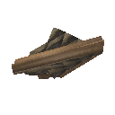 |
aaa57acf8990e684da6ec813d470cebe | $piece_darkwoodrooficorner | Shingle Roof Inner Corner 26 | NULL |
|
| darkwood_roof_45 |
0a0964dc9a88c994b9ff687fafbf8e0e | $piece_darkwoodroof45 | Shingle Roof 45 | NULL |
|
| darkwood_roof_top_45 |
d7c2cc0f3c533924180a2f9628f6c7ae | $piece_darkwoodrooftop45 | Shingle Roof Ridge 45 | NULL |
|
| darkwood_roof_ocorner_45 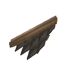 |
4e7002813a59b9b4b99b43e06869a727 | $piece_darkwoodroofocorner45 | Shingle Roof Outer Corner 45 | NULL |
|
| darkwood_roof_icorner_45 |
53685bbf3fc8010439103108efbcee22 | $piece_darkwoodrooficorner45 | Shingle Roof Inner Corner 45 | NULL |
|
| darkwood_pole |
e72e7da7abf0e924dbf482951015afb2 | $piece_darkwoodpole | Darkwood Pole 2m | NULL |
|
| darkwood_pole4 |
8a1882a138e5f5b42b0b5631ed2c65e8 | $piece_darkwoodpole4 | Darkwood Pole 4m | NULL |
|
| darkwood_beam |
d3bfcabb00ff8b546b08842c97fe0b72 | $piece_darkwoodbeam | Darkwood Beam 2 m | NULL |
|
| darkwood_beam_26 |
17716acd0f2c2c17094d8af52019ff03 | $piece_darkwoodbeam_26 | Darkwood Beam 26 | NULL |
|
| darkwood_beam_45 |
f7593e88471908c458aebe29052d7d6d | $piece_darkwoodbeam_45 | Darkwood Beam 45 | NULL |
|
| darkwood_beam4x4 |
7c2e192c0277e544a8208214e32c8622 | $piece_darkwoodbeam4 | Darkwood Beam 4 m | NULL |
|
| darkwood_decowall |
b51946089f078f749a886fcfe7bb9152 | $piece_darkwooddecowall | Carved Darkwood Divider | NULL |
|
| darkwood_arch |
55e0e79db6106da49a2ec46bb9fd5f5c | $piece_darkwoodarch | Darkwood Arch | NULL |
|
| darkwood_raven |
839b948e1f4c4f94c9127cb28c4de58e | $piece_darkwoodraven | Raven Adornment | NULL |
|
| darkwood_wolf |
7bbf246140040a04ca31e78ca7cb34e2 | $piece_darkwoodwolf | Wolf Adornment | NULL |
|
| wood_fence |
22d1937325c4240f7b4a8c2c02f7a9f5 | $piece_woodfence | Roundpole Fence | NULL |
|
| stake_wall |
3ea4bf876e5194d54a90532e16ba8600 | $piece_stakewall | Stakewall | NULL |
|
| piece_dvergr_stake_wall |
036a678625002f03f97a5b866c666036 | $piece_dvergr_stake_wall | Dvergr Stakewall | NULL |
|
| piece_sharpstakes |
16c816801eb59421093eb61a9b465344 | $piece_sharpstakes | Sharp Stakes | NULL |
|
| piece_stakewall_blackwood |
154e60c421896594aba909be0add57a9 | $piece_BlackwoodStakewall | Ashwood Stakewall | NULL |
|
| piece_dvergr_sharpstakes |
447a95f13957d4b1db52abcae01de28d | $piece_dvergr_sharpstakes | Dvergr Sharp Stakes | NULL |
|
| stone_wall_1x1 |
b34c3e5b5f966482eac44bbc2fe7eedf | $piece_stonewall1x1 | Stone Wall 1x1 | NULL |
|
| stone_wall_2x1 |
30d8ded92eca649c4b4428f26371a4f2 | $piece_stonewall2x1 | Stone Wall 2x1 | NULL |
|
| stone_wall_4x2 |
5a0d9f5cab0764652aa173418dfc20ef | $piece_stonewall4x2 | Stone Wall 4x2 | NULL |
|
| stone_pillar |
afbb2f91bc6f7428ba6f4ab25725531e | $piece_stonepillar | Stone Pillar | NULL |
|
| stone_arch |
525ee4d5e79044161bfa09463eb9e008 | $piece_stonearch | Stone Arch | NULL |
|
stone_floor_2x2 |
1064a57c1d3ae4c90a65adc981ea3b2a | $piece_stonefloor2x2 | Stone Floor 2x2 | NULL |
|
| stone_stair |
5f9dc6ce6dfb04c40914c6c85fd75c8a | $piece_stonestair | Stone Stair | NULL |
|
| blackmarble_1x1 |
88ef9df01ec464582b055b39ed9daf2c | $piece_blackmarble1x1 | Black Marble 1x1x1 | NULL |
|
| blackmarble_2x1x1 |
b06aa77b88c4e4059922764f7313dc19 | $piece_blackmarble2x1x1 | Black Marble 2x1x1 | NULL |
|
| blackmarble_2x2x2 |
3d022d67f64ea0257b418db273773ba6 | $piece_blackmarble2x2x2 | Black Marble 2x2x2 | NULL |
|
| blackmarble_floor |
ba54ed6987a1fc71e9fefad8a419b18a | $piece_blackmarble_floor | Black Marble Floor | NULL |
|
| blackmarble_floor_triangle |
bce3927afe64cbcf387cc0f2e64f254d | $piece_blackmarble_floor_triangle | Black Marble Floor Triangle | NULL |
|
| blackmarble_stair |
c690501d9fa94b792ac660fddd81764e | $piece_blackmarble_stair | Black Marble Stair | NULL |
|
| blackmarble_tip |
56c7518ace77d55f08cdca31d02f25b7 | $piece_blackmarble_tip | Black Marble Quarter Spire | NULL |
|
| blackmarble_base_1 |
04ad1b5014c940b6393dc0253c32361f | $piece_blackmarble_base1 | Black Marble Plinth | NULL |
|
| blackmarble_basecorner |
85cd7e1fec3cffc27937bb2efbb6a0a3 | $piece_blackmarble_basecorner | Black Marble Plinth Corner | NULL |
|
| blackmarble_out_1 |
52a42aff34d13fa4d86e3148ae0544a6 | $piece_blackmarble_out1 | Black Marble Cornice | NULL |
|
| blackmarble_outcorner |
4df75385a4ea4f3c4a43a3696c06aedc | $piece_blackmarble_outcorner | Black Marble Cornice Corner | NULL |
|
| blackmarble_arch |
0da7cf13fac75526e8daa971633c98a0 | $piece_blackmarble_arch | Black Marble Arch | NULL |
|
| blackmarble_column_1 |
cd8ccf6dda4b4cef5931144bb308af95 | $piece_blackmarble_column_1 | Black Marble Column Small | NULL |
|
| blackmarble_column_2 |
8a74926d3f920e15689ed59d6de65d5b | $piece_blackmarble_column_2 | Black Marble Column Wide | NULL |
|
| iron_floor_1x1_v2 |
bf90d383a1042764bbec4b75cfddbd12 | $piece_ironfloorSmall | Cage Floor 1x1 | NULL |
|
| iron_floor_2x2 |
13049d9491a3c6346ac4646a19c2e9fe | $piece_ironfloor | Cage Floor 2x2 | NULL |
|
| iron_wall_1x1 |
a9ad95bd792fc2740b58b4408d5176a8 | $piece_ironwallSmall | Cage Wall 1x1 | NULL |
|
| iron_wall_2x2 |
7e11d794297bcf94c8ce8ec4267f4822 | $piece_ironwall | Cage Wall 2x2 | NULL |
|
piece_dvergr_metal_wall_2x2 |
e1fbb0f3ec26bf95f9bd3dbb9df9f7aa | $piece_dvergr_metal_wall | Dvergr Metal Wall | NULL |
|
| woodiron_pole |
46b22acb75e0d42c895c4f4aec0aee34 | $piece_woodironpole | Wood Iron Pole | NULL |
|
| woodiron_beam |
e542b4adb8edc444a8bfb9e139c708ad | $piece_woodironbeam | Wood Iron Beam | NULL |
|
| woodiron_beam_26 |
17cf80814a016804083755547f79f8ce | $piece_woodironbeam_26 | Wood Iron Beam 26 | NULL |
|
woodiron_beam_45 |
cc3ea3879286df23ba99f39ec21d16e2 | $piece_woodironbeam_45 | Wood Iron Beam 45 | NULL |
|
| iron_grate |
6597169c5c172455cb67886a7cd28a9b | $piece_irongate | Iron Gate | NULL |
|
| piece_trap_troll |
24292e4fb57c6ab4a957c13b3ce04915 | $piece_trap | Trap | NULL |
|
| piece_turret |
ce38c6d19c32b014d99a3518c8010674 | $piece_turret | Ballista | Defensive structure that shoots missiles at anything that gets in its way. |
|
| bed |
7ea3d17319c0b4681a039adfa1fc2758 | $piece_bed | Bed | NULL |
|
| piece_bed02 |
ff7ba57cc4d3474488dfd71fb8787b5b | $piece_bed02 | Dragon Bed | NULL |
|
| ashwood_bed |
6ce5c48522ee0304388d64bf6082cb5f | $piece_ashwood_bed | Ashwood Bed | NULL |
|
| piece_chest_wood |
c98a482d15e7f4fada0909282da3747a | $piece_chestwood | Chest | NULL |
|
| piece_chest |
3ddd9f38424df40dbb3ce37d9664d90d | $piece_chest | Reinforced Chest | NULL |
|
| piece_chest_private |
152ae1432e42544bca51272a6aba6c5a | $piece_chestprivate | Personal Chest | NULL |
|
| piece_chest_blackmetal |
6973dc356b19c404b8905acf5876c0bc | $piece_chestblackmetal | Black Metal Chest | NULL |
|
| piece_chair |
623c3a0c150684f68b2f2308e89c76b0 | $piece_stool | Stool | NULL |
|
| piece_chair02 |
0ab9e76210cbd4b4490f84bb206ce90b | $piece_chair | Wood Chair | NULL |
|
| piece_chair03 |
7761f221d4764c64e93490dc53053711 | $piece_darkwoodchair | Darkwood Chair | NULL |
|
| piece_bench01 |
f3e9596916a030b4bb0e0e1df002b8ec | $piece_bench01 | Wood Bench | NULL |
|
| piece_logbench01 |
dced64900099c2a4f986b002424a0876 | $piece_benchlog | Sitting Log | NULL |
|
| piece_blackmarble_bench |
925d7c7f65a911c4597f0606d5870f7f | $piece_blackmarble_bench | Black Marble Bench | NULL |
|
| piece_throne01 |
9fd3ca7498c2938469b28255e309c0c9 | $piece_throne01 | Raven Throne | NULL |
|
| piece_throne02 |
b8fca855ec6075f47bab49569c25fc9a | $piece_stonethrone | Stone Throne | NULL |
|
| piece_blackmarble_throne |
aba79e7b822f76743b600f896064b08b | $piece_blackmarble_throne | Black Marble Throne | NULL |
|
| piece_bone_throne |
f60f461fe9e3e8a4d93abff0cac0e862 | $piece_bone_throne | Bone Throne | NULL |
|
| piece_table |
b3f7f89f9e8234781acdb05fbc905e24 | $piece_table | Table | NULL |
|
| piece_table_round |
e0fcee9c06453ed4c9615a8eb3646552 | $piece_table_round | Round Table | NULL |
|
| piece_table_oak |
74d6caa163c042b43ba42987735bb7e5 | $piece_table_oak | Long Heavy Table | NULL |
|
| piece_blackmarble_table |
22694a2dba4a19246b3cd160f3d7cfc0 | $piece_blackmarble_table | Black Marble Table | NULL |
|
| piece_walltorch |
778da688a38474f53ac49b87e1169858 | $piece_sconce | Sconce | NULL |
|
| piece_groundtorch |
add3320e6c15a4f8482e219dfee2fdce | $piece_groundtorch | Standing Iron Torch | NULL |
|
| piece_groundtorch_wood |
fe89c1d0dd6b143febbcdc20d1be6c89 | $piece_groundtorchwood | Standing Wood Torch | NULL |
|
| piece_groundtorch_green |
fea47948882764ef1b62392c0bed89a8 | $piece_groundtorchgreen | Standing Green-burning Iron Torch | NULL |
|
| piece_groundtorch_blue |
4a7b8bb81be70f076b226ffa8672d5ab | $piece_groundtorchblue | Standing Blue-burning Iron Torch | NULL |
|
| piece_groundtorch_mist |
4a5ad5829f02c3f2c896ce1697ff48df | $piece_groundtorchdemister | Wisp Torch | NULL |
|
piece_brazierfloor01 |
d4ed67b1b0066ac6aabde0d0cc942ef9 | $piece_brazierfloor01 | Standing Brazier | NULL |
|
| piece_brazierfloor02 |
b411a807ea3a906dd89b84a051a8f2a8 | $piece_brazierfloor02 | Blue Standing Brazier | NULL |
|
| piece_brazierceiling01 |
9868abb743f0ae142b322b302b3dfd4c | $piece_brazierceiling01 | Hanging Brazier | NULL |
|
| piece_Lavalantern |
6dd11b919498f3641aaf889a1dbed86d | $piece_lavalantern | Lava Lantern | NULL |
|
| portal_wood |
72c23e1c29b4a426a9c38129ad389791 | $piece_portal | Portal | Connects to another portal with equal or no tag. |
|
| portal_stone |
bb9b549991225de4ca2926bfeacf582b | $piece_portal_stone | Portal Stone | The powerful energy source lets you pass through even with the most valuable of items. |
|
| guard_stone |
9956b971c266b4e64b7c410027b87532 | $piece_guardstone | Ward | Emits a magic seal on the nearby surroundings which prevents other players from constructing buildings or opening doors. |
|
| Cart |
bd7ced1e1b7b94e7f8c59a0d7008a1d4 | $tool_cart | Cart | NULL |
|
| VikingShip_Ashlands |
b76c3560f7a2b7b49b30ebf4c1cc82d3 | $ship_longship_ashlands | Drakkar | NULL |
|
| VikingShip |
b6effad31ba38473ea35ca303ad411d3 | $ship_longship | Longship | NULL |
|
| Raft |
b65169457de244e75b31b05da7d3d9dd | $ship_raft | Raft | NULL |
|
| Karve |
3b9f574b78ca248f28b7f25733995873 | $ship_karve | Karve | NULL |
|
| itemstand |
5d470e476b829461e866c1176f3464cf | $piece_itemstand | Item Stand | Vertical |
|
| itemstandh |
9703a862ea60346aeb308fcf95202477 | $piece_itemstand | Item Stand | Horizontal |
|
sign |
c7c6f01ba8a9147319cfdaef3ac89d36 | $piece_sign | Sign | NULL |
|
| rug_fur |
c80bc8ac3c7544f3198dabaf223942fd | $piece_rug_lox | Lox Rug | NULL |
|
| rug_wolf |
52a0e4f3f69fa47c0a046ffd47381e55 | $piece_rug_wolf | Wolf Rug | NULL |
|
| rug_deer |
62798ecfa3f8340d9983c91eb5d2c503 | $piece_rug_deer | Deer Rug | NULL |
|
| jute_carpet |
4c87351c227fb85ca855ba776f1a7a6c | $piece_jute_carpet | Red Jute Carpet | NULL |
|
| jute_carpet_blue |
6a4ef9eb4bd2ea2b788c8c86fd29c69a | $piece_juteblue_carpet | Blue Jute Carpet | NULL |
|
rug_hare |
e6504d64b34500c40ab6aa357a4a0d71 | $piece_rug_hare | Hare Rug | NULL |
|
| rug_asksvin |
cb1d6f8d1565f644e94b1c9447327b4d | $piece_rug_asksvin | Asksvin Rug | NULL |
|
| rug_straw |
e0741e5c4dd47c24fbb6bdac030a685e | $piece_rug_straw | Straw | NULL |
|
| piece_banner01 |
287d856e336259f4e992dbdfdb370c09 | $piece_banner01 | Black Banner | NULL |
|
| piece_banner02 |
0c3b9e090babadb488b4bd400ff01e14 | $piece_banner02 | Blue Banner | NULL |
|
| piece_banner03 |
dfb0d13eef872124ab088e23b7072dd8 | $piece_banner03 | White and Red Striped Banner | NULL |
|
| piece_banner04 |
0cb2dc89959fe8b41bc65b51e8b61fac | $piece_banner04 | Red Banner | NULL |
|
| piece_banner05 |
1c4f98d13aec67044ae1fbf803181db2 | $piece_banner05 | Green Banner | NULL |
|
| piece_banner06 |
40fdc9ae3e634fd42a8092d11eef0eb2 | $piece_banner06 | Blue, Red and White Banner | NULL |
|
piece_banner07 |
bfd73687afdf561479dbb9d82973a801 | $piece_banner07 | White and Blue Striped Banner | NULL |
|
| piece_banner08 |
132270cc0d8bfdb43b1f9a5849e8f948 | $piece_banner08 | Yellow Banner | NULL |
|
| piece_banner09 |
088c512b93911d448b0b08de1dfc778d | $piece_banner09 | Purple Banner | NULL |
|
| piece_banner10 |
1aeba1501890e3841be1ae2e9311faac | $piece_banner10 | Orange Banner | NULL |
|
| piece_banner11 |
a0e1963b61299f7438e9324573acf4fd | $piece_banner11 | White Banner | NULL |
|
| piece_cloth_hanging_door |
df56dac48ab2895cdaf605b05404ed02 | $piece_clothdoor | Red Jute Curtain | NULL |
|
| piece_cloth_hanging_door_blue |
3dc01e010cc2b7a47bcd4acc1cbc6910 | $piece_hanging_cloth_blue1 | Blue Jute Drapes | NULL |
|
| piece_cloth_hanging_door_blue2 |
57d32be19b0ff5748bfaa075fd42e46a | $piece_hanging_cloth_blue2 | Blue Jute Curtain | NULL |
|
| piece_beehive |
fa038959a79074658b8a6c1a6771a0e3 | $piece_beehive | Beehive | NULL |
|
| piece_sapcollector |
10a037caf14b7724885a1f7b3a722f34 | $piece_sapcollector | Sap Extractor | Extract sap from mysterious branches. |
|
| fermenter |
931ace36de99947cc9a2afd23047791c | $piece_fermenter | Fermenter | NULL |
|
| piece_gift1 |
737be72b7b0824d0db10992ae2cffee0 | $piece_yuleklapp | Yuleklapp | NULL |
|
| piece_gift2 |
3b8c00290d3734a47ace68e94f63aeee | $piece_yuleklapp | Yuleklapp | NULL |
|
| piece_gift3 |
7019b776725e84fd9b8f5177f52e5342 | $piece_yuleklapp | Yuleklapp | NULL |
|
| piece_xmastree |
3ae8dd38b26a54204aab7436fd17e9cb | $piece_yuletree | Yule Tree | NULL |
|
piece_xmasgarland |
897a02aeaa103d2f994c6fd6c36a7930 | $piece_yulegarland | Yule Garland | NULL |
|
| piece_xmascrown |
3817dc1b7e4b8e4dbb8d48d6c73a8fbf | $piece_yulecrown | Yule Wreath | NULL |
|
| piece_mistletoe |
468de38450691d49994f17f79b4093ea | $piece_mistletoe | Mistletoe | NULL |
|
| piece_maypole |
228d5c5e4633041a69edc142fb00bc91 | $piece_maypole | Maypole | NULL |
|
piece_jackoturnip |
5e754918ee5f4f1178a67f6936e51205 | $piece_jackoturnip | Jack-o-turnip | NULL |
|
| piece_chest_treasure |
2eea37180951eea48b57426be7198413 | $piece_chesttreasure | Treasure Chest | NULL |
|
| treasure_pile |
9d2da989f175a7d4595ec395585e1018 | $piece_treasure_pile | Coin Pile | NULL |
|
| treasure_stack |
1c76bb3305c33b440a792928962480f0 | $piece_treasure_stack | Coin Stack | NULL |
|
| piece_bathtub |
e8de8d8939eef5b48be734ea6e082520 | $piece_bathtub | Hot Tub | NULL |
|
| crystal_wall_1x1 |
2ec2609b3ba7111b38ccebe5023abb42 | $piece_crystalwall1x1 | Crystal Wall 1x1 | NULL |
|
| piece_cartographytable |
3449de09ba416549383a0728fb2535a1 | $piece_cartographytable | Cartography Table | NULL |
|
| incinerator |
2bedae10b24758b479914984bdb89bd2 | $piece_incinerator | Obliterator | NULL |
|
ArmorStand |
759c31424d4e1514dbf67ca2fc388a01 | $piece_armorstand | Armour Stand | NULL |
|
| piece_magetable |
524fccf4a011c0e92a337ff4d2065bae | $piece_magetable | Galdr Table | Crafting station |
|
| piece_magetable_ext |
e68a9104efe5a8b26b67f2acc229d630 | $piece_magetable_ext | Rune Table | Galdr Table improvement |
|
| piece_magetable_ext2 |
69d774b3eb02a014292cdf0570e55044 | $piece_magetable_ext2 | Unfading Candles | Galdr Table improvement |
|
| piece_magetable_ext3 |
7e4d2789b54a0a94cb442fbc82b6614e | $piece_magetable_ext3 | Feathery Wreath | Galdr Table improvement |
|
| piece_wisplure |
f178fa4be9a2772528642ea5f4b589ac | $piece_wisplure | Wisp Fountain | Attracts wisps. They mostly come at night... mostly. |
|
| piece_dvergr_spiralstair |
4f0eeb4b64035cf8c952d27c3b6b6857 | $piece_dvergr_spiralstair | Dvergr Spiral Staircase Left | NULL |
|
| piece_dvergr_spiralstair_right |
5f69483b28bddb25092abf59d834fe78 | $piece_dvergr_spiralstair_right | Dvergr Spiral Staircase Right | NULL |
|
| piece_dvergr_lantern |
1842baabc90516f479fe6a1425dde543 | $piece_dvergr_lantern | Dvergr Wall Lantern | NULL |
|
| piece_dvergr_lantern_pole |
4187b20b206dfb106bfe1a7af7b1586c | $piece_dvergr_lantern_pole | Dvergr Pole Lantern | NULL |
|
| piece_barber |
671bfc3cb4cfdf34084a45bee1f0b894 | $piece_barber | Barber Station | Helps you stay up to date with the latest viking fashion. |
|
| BatteringRam |
598c937f0b42a0b4fa8fb265b5298a3c | $tool_batteringram | Battering Ram | NULL |
|
| Catapult |
93921a591a27a884e8c48125ea190084 | $tool_catapult | Catapult | NULL |
|
| piece_shieldgenerator |
c9f31857976c8ff499a1915491e3be2e | $piece_shieldgenerator | Shield Generator | Creates a shield to protect against weather and incoming projectiles. Fuelled by bones of any kind. |
|
| piece_pot3 |
7ff68568dc53e0c65801508f3d82cd55 | $piece_pot_small_green | Small Green Pot | NULL |
|
| piece_pot1 |
f12fcea1b4ce6ff20927fbd7f8a06173 | $piece_pot_medium_green | Medium Green Pot | NULL |
|
| piece_pot2 |
059ae1d064be4dd42be159c9deabd161 | $piece_pot_large_green | Large Green Pot | NULL |
|
| Piece_grausten_stone_ladder |
ae0aabd5321b5013aa3e2a6ac465b460 | $piece_grausten_stoneladder | Grausten Steep Stairs | NULL |
|
| piece_grausten_stonestair |
dcb895e52f25e368292b1893681d0194 | $piece_grausten_stair | Grausten Stairs | NULL |
|
| Piece_grausten_floor_1x1 |
c6f27c5d4a88d8a7b8af159f3cd6c743 | $piece_grausten_floor1x1 | Grausten Floor 1x1 | NULL |
|
| Piece_grausten_floor_2x2 |
d4845bfa8e5b9a79eb8cf5b50bd0d5f0 | $piece_grausten_floor2x2 | Grausten Floor 2x2 | NULL |
|
| Piece_grausten_floor_4x4 |
905bc5e83eb08e03bbf4cd53d440c8f4 | $piece_grausten_floor4x4 | Grausten Floor 4x4 | NULL |
|
| Piece_grausten_pillarbase_small |
56191b84de1d47e3bb896bd92ca43182 | $piece_grausten_pillarsmall | Grausten Small Pillar | NULL |
|
| Piece_grausten_pillarbase_medium |
80c937aa837bd787b954e8782e77bd71 | $piece_grausten_pillarmedium | Grausten Medium Pillar | NULL |
|
| Piece_grausten_pillarbase_tapered |
c31aea2d15a13cdcd90117148a8899c6 | $piece_grausten_pillartapered | Grausten Tapered Pillar | NULL |
|
| Piece_grausten_pillarbase_tapered_inverted |
f789580b031a6568783fa9c5d30a05a4 | $piece_grausten_pillartaperedinverted | Grausten Tapered Pillar (Inverted) | NULL |
|
| Piece_grausten_pillarbeam_small |
a8495239053baaf8994949f1c8eeacbb | $piece_grausten_beamsmall | Grausten Small Beam | NULL |
|
| Piece_grausten_pillarbeam_medium |
c59dd9b7f4cf053edbe6a009f77e9922 | $piece_grausten_beammedium | Grausten Medium Beam | NULL |
|
| Piece_grausten_pillar_arch_small |
54464b298d43725f7a8d71db0917b4dd | $piece_grausten_archsmall | Grausten Small Arch | NULL |
|
| Piece_grausten_pillar_arch |
0abfdbe98306783158460bb66a12d8f9 | $piece_grausten_archmedium | Grausten Medium Arch | NULL |
|
| Piece_grausten_wall_arch |
71ba09b7db5e321aa9f9c38f1efa6a20 | $piece_grausten_wallarch | Grausten Wall Arch | NULL |
|
| Piece_grausten_wall_arch_inverted |
7db2ead38b870767ca824f8e030099a6 | $piece_grausten_wallarchinv | Grausten Wall Arch (Inverted) | NULL |
|
| Piece_grausten_wall_1x2 |
63bf1ada01b6ad72995a172c09aad545 | $piece_grausten_wall1x2 | Grausten Wall 1x2 | NULL |
|
| Piece_grausten_wall_2x2 |
653f0363bd70a2295b61500a36f83a82 | $piece_grausten_wall2x2 | Grausten Wall 2x2 | NULL |
|
| Piece_grausten_wall_4x2 |
b1ba605e2baeb12e99143dc962e94dc1 | $piece_grausten_wall4x2 | Grausten Wall 4x2 | NULL |
|
| Piece_grausten_window_2x2 |
fd03cf416fb5564a78fd39b427af0dde | $piece_grausten_window2x2 | Grausten Window 2x2 | NULL |
|
| Piece_grausten_window_4x2 |
d2fea25d6c91d45c1af8a90fb919268b | $piece_grausten_window4x2 | Grausten Window 4x2 | NULL |
|
| piece_grausten_roof_45 |
66c9a061a2b553745ba4b9027dcf2b01 | $piece_grausten_roof45 | Grausten Roof | NULL |
|
| piece_grausten_roof_45_corner |
d2495ce39659d5cfe9e28dda324ddf90 | $piece_grausten_roof45_corner | Grausten Roof Corner | NULL |
|
| piece_grausten_roof_45_corner2 |
afd8c71cfdbdfd591aa0c6c75c1fea2d | $piece_grausten_roof45_corner2 | Grausten Roof Corner | NULL |
|
piece_grausten_roof_45_arch |
8036e00aae66fa82299848b444b0c00d | $piece_grausten_roof45_arch | Grausten Arched Roof | NULL |
|
| piece_grausten_roof_45_arch_corner |
97d6d94c5e0a727d0a458d4f5a22c751 | $piece_grausten_roof45_archcorner | Grausten Arched Roof Corner | NULL |
|
| piece_grausten_roof_45_arch_corner2 |
d388e58b5ad39a13b87fb0e9aaf95489 | $piece_grausten_roof45_archcorner2 | Grausten Arched Roof Corner | NULL |
|
| flametal_gate |
fc5480e05c9b17a4bae4829645f44d68 | $piece_flametalgate | Flametal Gate | NULL |
|
| piece_blackwood_bench01 |
e896889a751d4c7909a5e8260d690eb5 | $piece_blackwoodbench01 | Ashwood Bench | NULL |
|
ashwood_wall_2x2 |
73b3fab02ae7bb45aa4a561d86df69cb | $piece_ashwood_wall | Ashwood Wall | NULL |
|
| ashwood_halfwall_1x2 |
a19cdd60fdf49a7fbb6e997f8bf75f18 | $piece_ashwood_halfwall | Ashwood Half Wall | NULL |
|
| ashwood_quarterwall_1x1 |
4d4556bfa535b5c159afb6eb85590452 | $piece_ashwood_quarterwall | Ashwood Quarter Wall | NULL |
|
| ashwood_wall_arch |
623a569d581943e4cbbab4626c333edf | $piece_ashwood_archedwall | Ashwood Arched Wall | NULL |
|
| ashwood_decowall_2x2 |
142be2aef5745686d843b568940b8b12 | $piece_ashwood_decowall | Ashwood Decorative Wall | NULL |
|
| ashwood_decowall_tree |
8e661051295cb494fb9c29fddd15bd13 | $piece_ashwood_decowall_tree | Ashwood Decorative Window | NULL |
|
| ashwood_decowall_divider |
5c562765333f6884583d75e9cc01c0d2 | $piece_ashwood_decowall_divider | Ashwood Divider | NULL |
|
ashwood_floor_2x2 |
858bb1e5474c1e241a4a778ba38fc370 | $piece_ashwood_floor_2x2 | Ashwood Floor 2x2 | NULL |
|
| ashwood_floor_1x1 |
8ba3441fce728b047bf0fed6f2474572 | $piece_ashwood_floor_1x1 | Ashwood Floor 1x1 | NULL |
|
| ashwood_deco_floor |
2587a0b3d0c35f749bda59701b016f95 | $piece_ashwood_floor_deco | Ashwood Decorative Floor | NULL |
|
| ashwood_arch_big |
7085655f49f1e0d44bc9a7a1ef2ade64 | $piece_ashwoodarch_big | Ashwood Arch | NULL |
|
| ashwood_beam_1m |
e31400dac2f38d948ab614d1a99f02cc | $piece_ashwood_beam_1m | Ashwood Beam 1 m | NULL |
|
| ashwood_beam_2m |
38d3b244885f65b4fab1aa319e330bdf | $piece_ashwood_beam_2m | Ashwood Beam 2 m | NULL |
|
| ashwood_pole_1m |
3c33a4a00e742364a8af2818d6b9fa74 | $piece_ashwood_pole_1m | Ashwood Pole 1 m | NULL |
|
| ashwood_pole_2m |
60cc3ed0d74f87044bff8a610d5de6b6 | $piece_ashwood_pole_2m | Ashwood Pole 2 m | NULL |
|
| ashwood_wall_beam_26 |
e125972d211b31454bd01f953f3abf82 | $piece_ashwoodbeam26 | Ashwood Beam 26 | NULL |
|
| ashwood_wall_cross_26 |
5f7179880542c16e888f8e786c21925a | $piece_ashwoodcross26 | Ashwood Roof Cross 26 | NULL |
|
| ashwood_wall_beam_45 |
3cfb8d5e8b072c49b8d7722b38e80230 | $piece_ashwoodbeam45 | Ashwood Beam 45 | NULL |
|
| ashwood_wall_cross_45 |
1dafc272d255705c89b52171fe795d3e | $piece_ashwoodcross45 | Ashwood Roof Cross 45 | NULL |
|
| ashwood_wall_roof_26 |
6eb4f36813e29b63482697b9feea7c88 | $piece_ashwoodwallroof_26 | Ashwood Wall 26 | NULL |
|
| ashwood_wall_roof_26_upsidedown |
d553a131943aef77eacd4104eceaa09c | $piece_ashwoodwallroof_26_upsidedown | Ashwood Wall 26 (Inverted) | NULL |
|
| ashwood_wall_roof_45 |
c163fd0c227aacdacb695e59ad15a006 | $piece_ashwoodwallroof_45 | Ashwood Wall 45 | NULL |
|
| ashwood_wall_roof_45_upsidedown |
c021bba002348541f815504056dbf3f1 | $piece_ashwoodwallroof_45_upsidedown | Ashwood Wall 45 (Inverted) | NULL |
|
| ashwood_stair |
208f5a98ced1c544aadcd934606bebbc | $piece_ashwoodstair | Ashwood Stair | NULL |
|
| ashwood_door |
eaf7ab4c310b72244ad5904069071ace | $piece_ashwood_door | Ashwood Door | NULL |
|
| piece_asksvinskeleton |
6581240a0d276d84d84e6e8362d5aeba | $piece_asksvinskeleton | Asksvin Skeleton | NULL |
|
| Piece_flametal_pillar |
e9f9a247454c3fc438c3179725504367 | $piece_flametal_pillar | Flametal Pillar | NULL |
|
| Piece_flametal_beam |
fd72949da7dd35d40bc25638b866f7f5 | $piece_flametal_beam | Flametal Beam | NULL |
|
_HoePieceTable
| Piece | AssetID | Token | English Name | Description | Resources required |
|---|---|---|---|---|---|
| mud_road_v2 | ed80c66b8108b0c11a3bf68086e1c536 | $piece_levelground | Level Ground | NULL | |
| raise_v2 | f44128242fde1b48ca3a91a577ee9872 | $piece_raise | Raise Ground | NULL |
|
| path_v2 | 92740b48761f2a503bc68327aecc5a68 | $piece_path | Pathen | NULL | |
| paved_road_v2 | 11377d2a6ee724444be5e58d4479f95c | $piece_pavedroad | Paved Road | NULL |
|